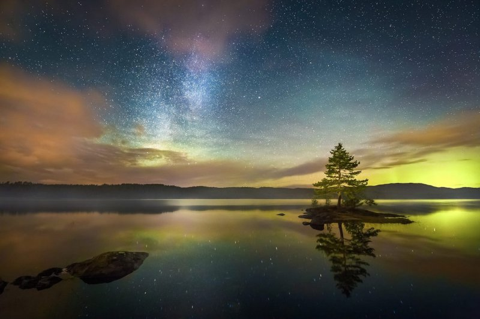

<!--shape фігура в якій буде посилання в малюнку rect, circle, poly -->
<!--coords кординати -->
<map name="mymap">
  <area shape="rect"
  coords="100,150,200,250"
  href="http://www.google.com.ua"
  title="My rect"
/>
</map>


<map name="mymap">
  <area shape="circle"
  coords="100,150,50"
  href="http://www.google.com.ua"
  title="My rect"
/>


</map>
